통합 진단
여러 증상을 따로 보지 않고
원인부터 함께 봅니다
치아 통증과 잇몸, 교합 상태가 함께 얽혀 있다면 전체 구강 상태를 확인하고 지금 필요한 치료의 우선순위부터 정합니다.
과잉진료와 통증, 반복되는 내원에 대한 걱정까지 듣고
꼭 필요한 치료를 이해하기 쉽게 안내합니다.
통합 진단
치아 통증과 잇몸, 교합 상태가 함께 얽혀 있다면 전체 구강 상태를 확인하고 지금 필요한 치료의 우선순위부터 정합니다.
자연치아 보존
충치와 신경치료, 지각과민처럼 치아 보존이 중요한 경우 남길 수 있는 치아의 가능성을 먼저 확인하고 필요한 만큼 치료합니다.
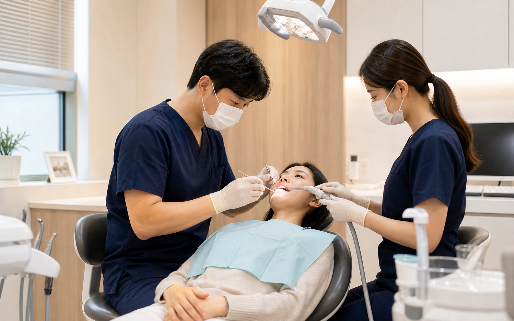
예방과 유지관리
정기검진과 스케일링, 생활 습관 안내까지 이어가며 치료한 치아와 잇몸을 오래 건강하게 유지할 수 있도록 돕습니다.
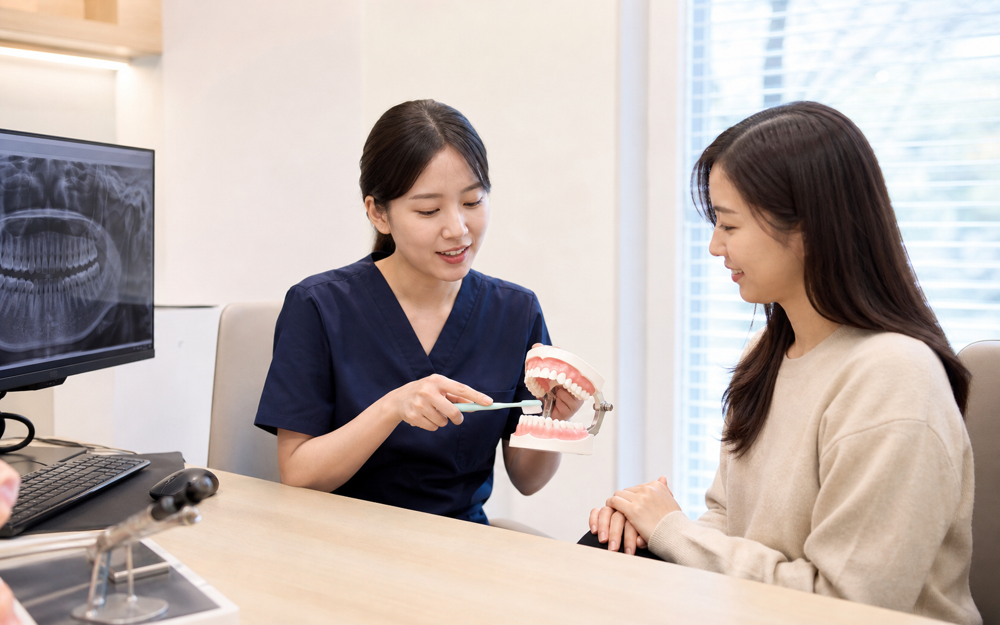
디지털 진단 장비
진단부터 치료 계획과 보철 제작까지 필요한 정보를 한 흐름으로 연결합니다.
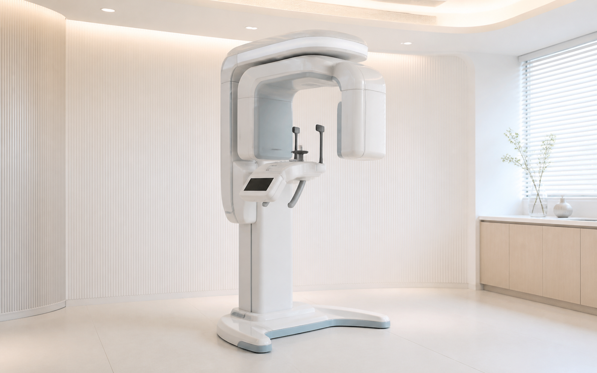
치아 뿌리와 턱뼈, 잇몸뼈 상태를 입체적으로 확인해 겉으로 보이지 않는 원인을 살핍니다.
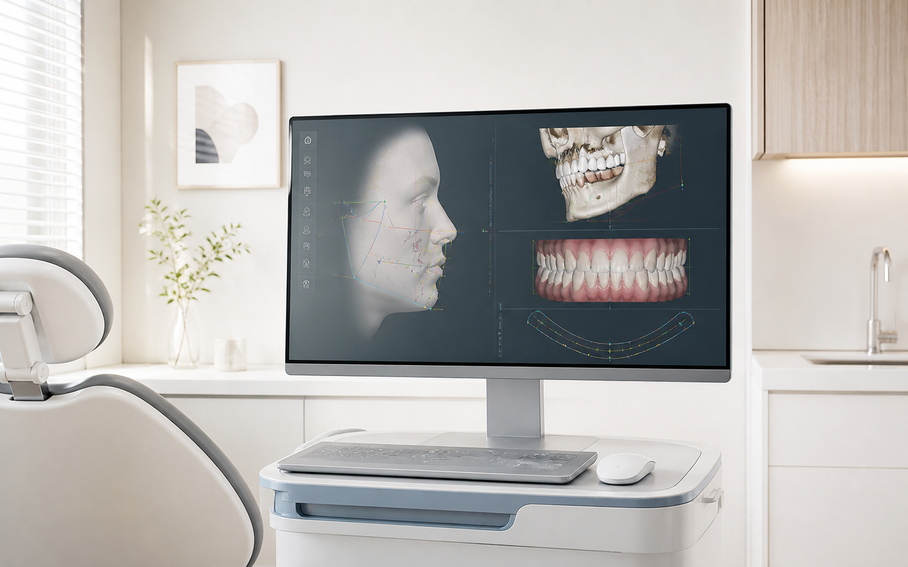
얼굴뼈와 치아의 관계, 교합 상태를 분석해 기능과 균형을 함께 살핍니다.
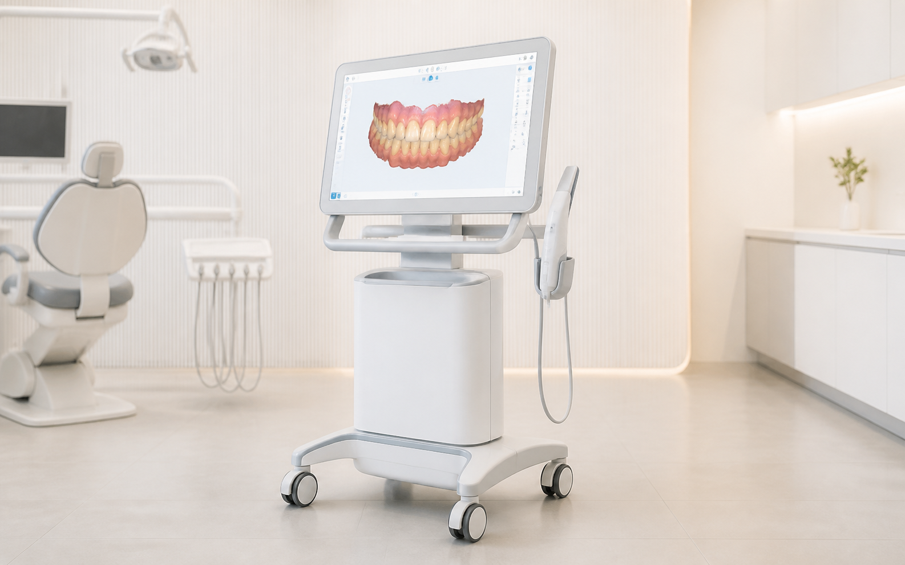
치아와 잇몸의 형태를 빠르게 스캔해 정밀한 구강 데이터로 기록합니다.
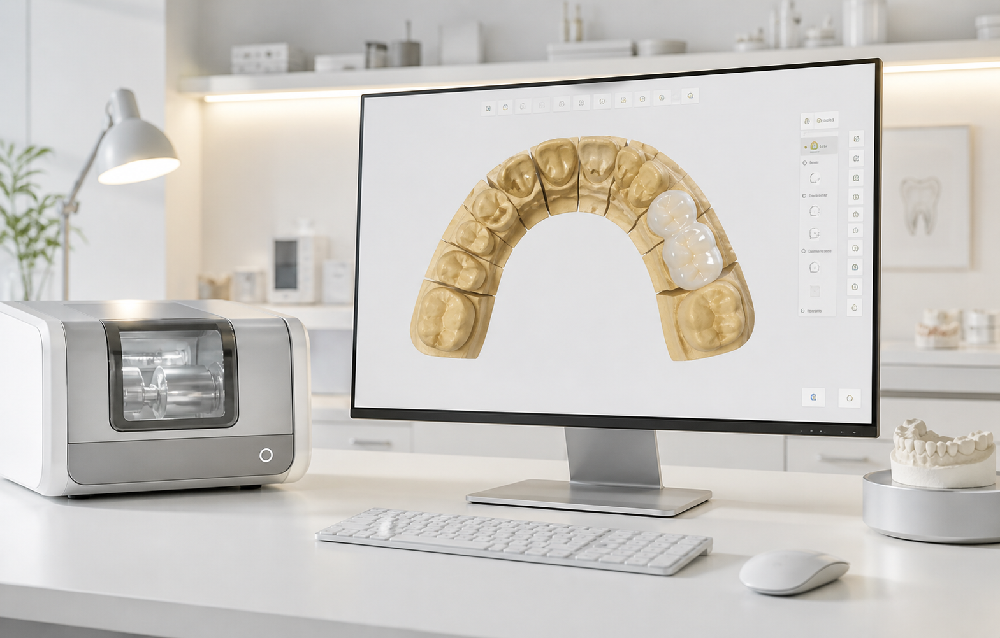
구강 데이터를 치료에 필요한 디지털 설계와 제작 과정으로 연결합니다.
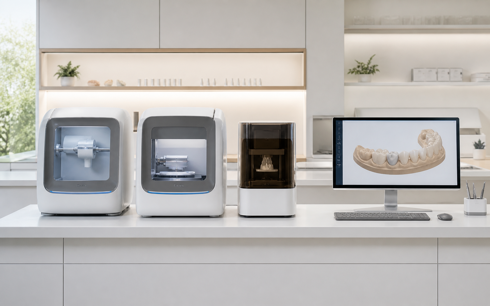
의료진과 기공 과정이 바로 연결되어 보철의 모양과 높이, 맞물림을 빠르게 확인하고 조정합니다.
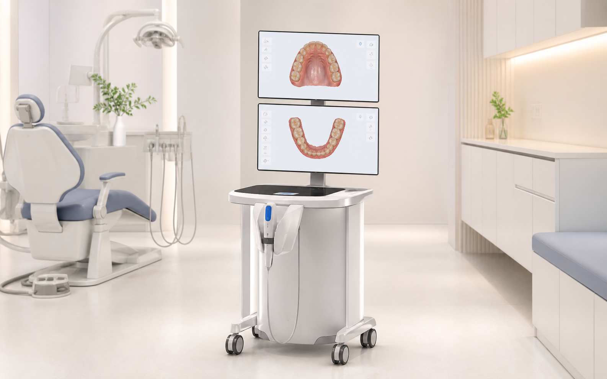
스캔한 치열을 화면으로 확인하며 교합과 보철 계획을 함께 살펴봅니다.
일반진료 과정
비슷한 증상이라도 원인은 다를 수 있습니다. 필요한 검사를 거쳐 치료의 순서를 정하고, 치료 후 관리까지 이어갑니다.
치아 통증, 시림, 잇몸 불편감과 턱관절 증상 등 지금 가장 불편한 점을 먼저 듣습니다.
충치와 잇몸 상태, 치아 마모와 교합, 기존 보철물의 상태를 함께 확인합니다.
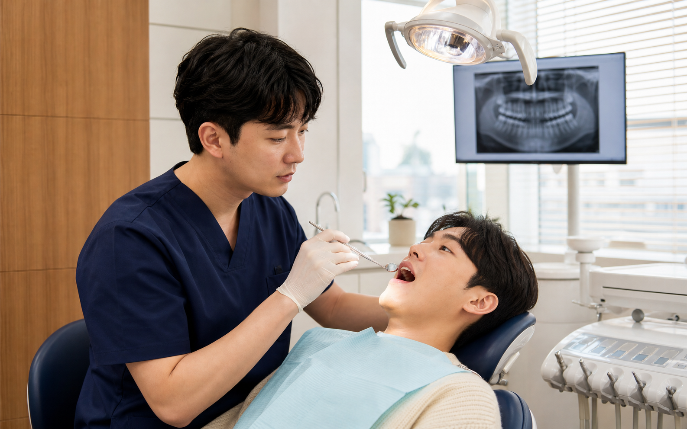
치료 범위에 따라 구강검진, X-ray, 3D CT와 구강 스캔 등 필요한 검사만 진행합니다.
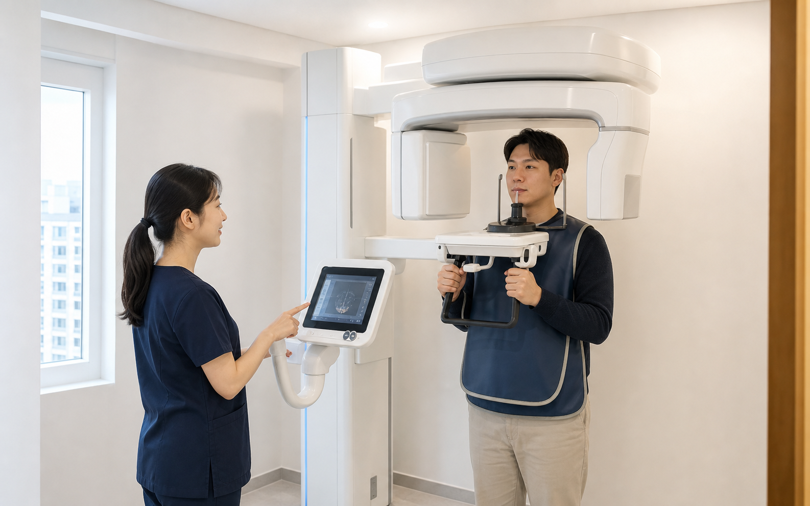
전체 구강 상태와 치료 우선순위를 확인하고 필요한 경우 분야별 의료진이 치료 방향을 함께 세웁니다.
레진과 인레이, 크라운, 신경치료, 스케일링과 잇몸치료 등 상태에 맞는 치료를 진행합니다.
정기검진과 구강위생 관리, 식습관과 이갈이 관리 등 치료 후 유지관리를 안내합니다.
일반진료 치료 예시
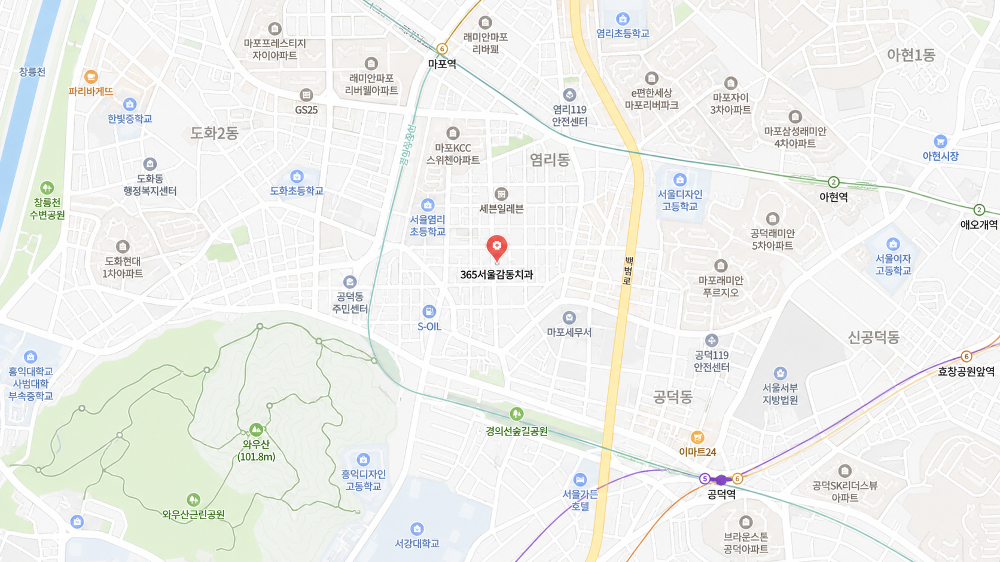